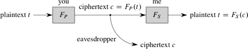

When you buy something over the Internet, you probably have to supply your credit-card number to a server on the seller's website or to a server on a third-party payment service's website. To get your credit-card number to a server, it has to go over the Internet. The Internet is a public network, and anyone can discern the bits that go over it. Therefore, if your credit-card number were to go out over the Internet without being disguised somehow, then anyone could figure it out and start purchasing goods and services on your account.
Now, it's unlikely that someone is sitting there, just waiting for you to send something that looks like a credit-card number over the Internet. It's more likely that someone is waiting for anyone to do so, and maybe you will be the unfortunate victim. It would be much safer for you to disguise your credit-card number whenever you send it over the Internet. Indeed, you probably do. If you use a secure website—one whose URL begins with "https:" rather than the usual "http:"—then your browser disguises the information it sends by a process called encryption. (The https protocol also provides "authentication," so that you know you're connecting to the site you think you're connecting to.) In today's lecture, we'll look at encryption, as well as the opposite process, decryption, where encrypted information is turned back into its original form. Together, the processes of encryption and decryption form the core of the field of cryptography. You might be surprised to learn that cryptography encompasses far more than just ways to encrypt and decrypt information, but we'll focus on encryption and decryption here.
Although I consider my credit-card number to be important information to safeguard, I also recognize that it's not all that important in the grand scheme of things. If someone steals my credit-card number, national security is not at risk. But if someone can eavesdrop on instructions from the State Department to a diplomat, or if someone can snoop on military information, national security could indeed be at risk. Therefore, not only do we need ways to encrypt and decrypt information, but these ways need to be highly difficult to defeat.
Today, we'll examine some of the basic ideas underlying cryptography. Modern cryptography goes far, far beyond what I'm presenting here. Don't try to develop a secure system based solely on the material in today's lecture; you would need to understand modern cryptography in much greater detail to create a system that is secure in both theory and practice. For example, you would need to follow established standards, such as those published by the National Institute of Standards and Technology. But this lecture will give you a flavor of some algorithms that were motivated by how to encrypt and decrypt information.
In cryptography, we call the original information the plaintext and the encrypted version the ciphertext. Encryption, therefore, converts plaintext to ciphertext, and decryption converts ciphertext back to its original plaintext. The information needed to convert is known as the cryptographic key.
In a simple substitution cipher, you encrypt a text by just substituting one letter for another, and you decrypt an encrypted text by inverting the substitution. Julius Caesar would communicate with his generals by using a shift cipher, in which the sender replaced each letter in a message by the letter that appears three places later in the alphabet, wrapping around at the end. In our 26-letter alphabet, for example, A would be replaced by D, and Y would be replaced by B (after Y comes Z, then A and B). In Caesar's shift cipher, if a general needed more troops, he could encrypt the plaintext Send me a hundred more soldiers as the ciphertext Vhqg ph d kxqguhg pruh vroglhuv. Upon receiving this ciphertext, Caesar would replace each letter by the letter occurring three places earlier in the alphabet, wrapping around at the front of the alphabet, to recover the original plaintext Send me a hundred more soldiers. (In Caesar's time, of course, the message would have been in Latin, using the Latin alphabet of the time.)
If you intercept a message and you know that it was encrypted by a shift cipher, it's ridiculously easy to decrypt, even if you don't know the shift amount in advance: just try all possible shifts until the decrypted ciphertext makes sense as plaintext. For a 26-character alphabet, you need to try only 25 shifts.
You can make the cipher a little more secure by converting each character to some other, unique, character, but not necessarily the one that appears a fixed number of places later in the alphabet. That is, you create a permutation of the characters and use that as your key. It's still a simple substitution cipher, but it's better than a shift cipher. If you have n characters in your character set, then an eavesdropper who intercepts a message would have to discern which of the n! permutations you had used. The factorial function grows very quickly in n; in fact, it grows faster than an exponential function.
So why not just uniquely convert each character to some other character? If you've ever tried to solve the "cryptoquote" puzzle that appears in many newspapers, you know that you can use letter frequencies and letter combinations to narrow down the choices. Suppose that the plaintext Send me a hundred more soldiers converted to the ciphertext Krcz sr h byczxrz sfxr kfjzgrxk. In the ciphertext, the letter r appears the most often, and you could guess—correctly—that its corresponding plaintext character is e, the most commonly occurring letter in English text. Then you could see the two-letter word sr in the ciphertext and guess that the plaintext character corresponding to the ciphertext s must be one of b, h, m, or w, since the only two-letter words in English ending in e are be, he, me, and we. You could also determine that the plaintext a corresponds to the ciphertext h, because the only single-letter lowercase word in English is a.
Of course, if you're encrypting credit-card numbers, then you don't have to worry too much about letter frequencies or letter combinations. But the ten digits yield only 10! unique ways to convert one digit to another, or 3,628,800. To a computer, that's not very many, and an eavesdropper could automate attempts to put through purchases on each of the 10! ways—possibly succeeding with credit-card numbers other than yours.
You might have noticed one other problem with using a simple substitution cipher: both the sender and receiver have to agree on the key. Moreover, if you're sending different messages to different parties, and you don't want each party to be able to decrypt messages intended for someone else, then you need to establish a separate key for each party.
When the sender and receiver use the same key, they are practicing symmetric-key cryptography. They must somehow agree in advance upon just what key they're using.
Assuming for now that you're fine with using symmetric-key cryptography, but that a simple substitution cipher is not sufficiently secure, another option is the one-time pad. But first, a quick lesson on the exclusive-or operation. The exclusive-or, or XOR, operation applies to bits. We use ⊕ to denote this operation:0 ⊕ 0 = 0 ,
0 ⊕ 1 = 1 ,
1 ⊕ 0 = 1 ,
1 ⊕ 1 = 0 .
The simplest way to think of the XOR operation is that if x is a bit, then x ⊕ 0 = x and x ⊕ 1 gives the opposite of x. Furthermore, if x and y are bits, then (x ⊕ y) ⊕ y = x: XORing x with the same value twice gives x.
Suppose that I want to send you a one-bit message. I could send you either a 0 or a 1 as the ciphertext, and we would have to agree on whether I was sending you the bit value I wanted to send you or the opposite of that bit value. Looked at through the lens of the XOR operation, we would have to agree on whether I was XORing that bit with 0 or with 1. If you were to then XOR the ciphertext bit you received with the bit that I had XORed with—the key—you would recover the original plaintext.
Now suppose that I want to send you a two-bit message. I could leave both bits alone, I could flip both bits, I could flip the first bit but not the second, or I could flip the second bit but not the first. Again, we would have to agree on which bits I was flipping, if any. In terms of the XOR operation on two bits, we would have to agree on which of the two-bit sequences 00, 01, 10, or 11 was the key with which I was XORing the bits of the plaintext to form the ciphertext. And again, you could XOR the two-bit ciphertext with the same two-bit key that I had XORed the plaintext with to recover the original plaintext.
If the plaintext required b bits, then I could generate a random sequence of b bits as the key, let you know the b bits of the key, and then XOR, bit by bit, the plaintext with the key to form the ciphertext. Once you received the b-bit ciphertext, you could XOR it, bit by bit, with the key to recover the b-bit plaintext. This system is called a one-time pad, and the key is called the pad.
(The name comes from the pre-computer realization of the idea, where each party had a pad of paper with a key written on each sheet, and the parties had identical key sequences. A key could be used one time and then its sheet torn off from the pad, exposing the next key. This paper-based system used a shift cipher, but on a letter-by-letter basis, where each corresponding letter of the key gives the shift amount, from 0 for a to 25 for z. For example, since z means to shift by 25, m means to shift by 12, and n means to shift by 13, the key zmn converts the plaintext dog to the ciphertext cat. Unlike the XOR-based system, however, shifting the letters of the ciphertext in the same direction with the same key does not yield back the plaintext; in this case, it would give bmg. Instead, you have to shift the ciphertext letters in the opposite direction.)
As long as the bits of the key are randomly chosen, it's well nigh impossible for an eavesdropper to decrypt the ciphertext by guessing the key. Even if the eavesdropper knows something about the plaintext—for example, that it's English—for any ciphertext and any potential plaintext, there exists a key converting the potential plaintext to the ciphertext, and this key is the bitwise XOR of the potential plaintext and the ciphertext. (For the letter-by-letter scheme, the key zmn converts the plaintext dog to the ciphertext cat, but we can arrive at this ciphertext with a different plaintext, elk, and a different key, ypj.) That's because if the potential plaintext is t, the ciphertext is c, and the key is k, then not only is t ⊕ k = c, but also t ⊕ c = k; the ⊕ operation applies bit-by-bit to t, k, and c, so that the ith bit of t XORed with the ith bit of k equals the ith bit of c. And so encrypting with a one-time pad prevents the eavesdropper from gaining any additional information about the plaintext.
To summarize: one-time pads give good security, but the keys require as many bits as the plaintext, these bits should be randomly chosen, and the keys need to be shared between the parties in advance. As the name implies, you should use a one-time pad just one time. If you use the same key k for plaintexts t1 and t2, then (t1 ⊕ k) ⊕ (t2 ⊕ k) = t1 ⊕ t2, which can reveal where the two plaintexts have the same information.
When the plaintext is long, the pad in a one-time pad has to be equally long, which can be rather unwieldy. Instead, some symmetric-key systems combine two additional techniques: they use a shorter key, and they chop up the plaintext into several blocks, applying the key to each block in turn. That is, they consider the plaintext to be l blocks t1, t2, t3, …, tl, and they encrypt these plaintext blocks into l blocks c1, c2, c3, …, cl of ciphertext. Such a system is known as a block cipher.
In practice, block ciphers encrypt using a system quite a bit more complicated than the simple XORing of the one-time pad. One frequently used symmetric-key cryptosystem, AES (the Advanced Encryption Standard), incorporates a block cipher. I won't go into details of AES, other than to say that it uses elaborate methods to slice and dice a plaintext block to produce ciphertext. AES uses a key size of 128, 192, or 256 bits and a block size of 128 bits.
There's still a problem with block ciphers, however. If the same block appears twice in the plaintext, then the same encrypted block will appear twice in the ciphertext. One way to solve this problem uses the technique of cipher block chaining. Suppose that you want to send me an encrypted message. You chop up the plaintext t into l blocks t1, t2, t3, …, tl, and you create the l blocks c1, c2, c3, …, cl of ciphertext as follows. Let's say that you'll encrypt a block by applying some function E to it, and I'll decrypt a block of ciphertext by applying some function D. You create the first block of ciphertext, c1, as you'd expect: c1 = E(t1). But before encrypting the second block, you XOR it, bit by bit, with c1, so that c2 = E(c1 ⊕ t2). For the third block, you first XOR it with c2: c3 = E(c2 ⊕ t3). And so on, so that in general, you compute the ith block of ciphertext based on the (i - 1)st block of ciphertext and the ith block of plaintext: ci = E(ci - 1 ⊕ ti). This formula even works for computing c1 from t1 if you start with c0 being all 0s (because 0 ⊕ x gives x). To decrypt, I first compute t1 = D(c1). From c1 and c2, I can compute t2 by first computing D(c2), which equals c1 ⊕ t2, and then XORing the result with c1. In general, I decrypt ci to determine ti by computing ti = D(ci) ⊕ ci - 1; as with encryption, this scheme works even for computing t1 if I start with c0 being all 0s.
We're not quite out of the woods. Even with cipher block chaining, if you send me the same message twice, you'll send the same sequence of ciphertext blocks each time. An eavesdropper would know that you're sending me the same message twice, which could be valuable information for the eavesdropper to have. One solution is to not start with c0 being all 0s. Instead, you randomly generate c0, you use that when encrypting the first block of plaintext, and I use it when decrypting the first block of ciphertext; we call this randomly generated c0 an initialization vector.
In order for symmetric cryptography to work, both the sender and receiver need to agree on the key. In addition, if they're using a block cipher with cipher block chaining, they might also need to agree on the initialization vector. As you could imagine, it's rarely practical to agree on these values in advance. So how do the sender and receiver agree on the key and initialization vector? I'll defer the answer to the section on hybrid cryptosystems later in this lecture.
It's obvious that in order for the receiver of an encrypted message to be able to decrypt it, the sender and receiver must both know the key used to encrypt. Right?
Wrong.
In public-key cryptography, each party has two keys: a public key and a secret key. I'll describe public-key cryptography with two parties, you and me, and I'll denote my public key by P and my secret key by S. You have your own public and secret keys. Other parties who participate have their own public and secret keys.
Secret keys are secret, but public keys may be known to everyone. They could even appear in a centralized directory that lets everyone know everyone else's public key. Under the right conditions, you and I can use either of these keys to encrypt and decrypt. By the "right conditions," I mean that there exist functions that use the public and secret keys to either encrypt plaintext to ciphertext or decrypt ciphertext to plaintext. Let's denote the function that I use with my public key by FP and the function that I use with my secret key by FS.
The public and secret keys have a special relationship: the functions FP and FS that they induce are inverses of each other. For any plaintext t, applying one and then the other gives back t:t = FS(FP(t)) = FP(FS(t)) .
The applications of public-key cryptography that we'll see here require only that t = FS(FP(t)), so that if you use my public key to encrypt plaintext into ciphertext and then I use my secret key to decrypt the ciphertext, I get back the original plaintext. Some other applications of public-key cryptography require that t = FP(FS(t)), so that if I encrypt plaintext with my secret key, anyone can decrypt the ciphertext.
Anyone should be able to compute my public-key function FP efficiently, but only I should be able to compute my secret-key function FS in any reasonable amount of time. (Yes, I'm being vague here, but we'll soon see an actual implementation of public-key cryptography.) The same holds for everyone else's public and secret keys: the public-key function FP is efficiently computable, but only the holder of the secret key can reasonably compute the secret-key function FS.
Here's how you can send me a message using public-key cryptography:

You start with the plaintext t. You find my public key P; maybe you get it directly from me, or maybe you find it in a directory. Once you have P, you encrypt the plaintext to produce the ciphertext c = FP(t), which you can do efficiently. You send me the ciphertext, so that any eavesdropper who intercepts what you send me sees only the ciphertext. I take the ciphertext c and decrypt it using my secret key, reproducing the plaintext t = FS(c). You, or anyone else, can encrypt to produce the ciphertext reasonably quickly, but only I can decrypt the ciphertext to reproduce the plaintext in any reasonable amount of time.
In practice, we need to make sure that the functions FP and FS work together correctly. Suppose that FP gave the same result for two different plaintexts, t1 and t2; that is, FP(t1) = FP(t2). Then, when I receive a ciphertext FP(t1) and try to decrypt it by running it through FS, I don't know whether I'll get back t1 or t2. On the other hand, it's OK—in fact, preferable—for encryption to incorporate an element of randomization, so that the same plaintext is encrypted into different ciphertexts upon each time it's run through FP. Of course, the decryption function FS would need to be designed to compensate, so that it could convert multiple ciphertexts into the same plaintext.
A problem arises, however. The plaintext t could take on an arbitrary number of possible values—in fact, it could be arbitrarily long—and the number of values that FP could convert t to has to be at least as many as the number of values that t could take on. How can we construct the functions FP and FS under the additional constraints that FP has to be easy to compute for everyone and FS has to be easy only for me? It's hard, but it's doable if we can bound the number of possible plaintexts—that is, we use a block cipher.
Public-key cryptography is a lovely concept, but it relies on being able to find functions FP and FS that work correctly together, FP is easy for anyone to compute, and FS is easy for only the holder of the secret key to compute. We call a scheme that fulfills these criteria a public-key cryptosystem, and the RSA cryptosystem, or just RSA, is one such scheme. (The name comes from its inventors, Ronald Rivest, Adi Shamir, and Leonard Adelman.)
RSA depends on several facets of number theory, many of which relate to modular arithmetic. In modular arithmetic, we pick a positive integer, let's say n, and whenever we get to n, we wrap back around to 0. It's like regular arithmetic with integers, but we always divide by n and take the remainder. For example, if we're working modulo 5, then the only possible values are 0, 1, 2, 3, 4, and 3 + 4 = 2 since 7 divided by 5 gives a remainder of 2. As in Python, let's use the operator %, to compute remainders, so that we can say 7 % 5 = 2. What's particularly nice about modular arithmetic is that we can take % operations in the middle of expressions and not change the result:(a + b) % n = ((a % n) + (b % n)) % n ,
ab % n = ((a % n)(b % n)) % n ,
ab % n = (a % n)b % n
Furthermore, for any integer x, we have that xn % n is 0.
In order for RSA to fulfill the criteria for a public-key cryptosystem, two other number-theoretic properties related to prime numbers must hold. As you might know, a prime number is an integer greater than 1 that has only two integer factors: 1 and itself. For example, 7 is prime, but 6 is not, being factorable as 2 ⋅ 3. The first property that RSA relies on is that if you have a number that is the product of two large prime numbers, then you cannot determine these factors in any reasonable amount of time. Yes, you could test all possible odd divisors up to the square root of the number, but if the number is large—hundreds or thousands of digits—then its square root has half as many digits, which could still be large. Although you could theoretically find one of the factors, the resources required (time and/or computing power) would make finding a factor impractical. For example, if the number has 1000 bits, then its square root has 500 bits and could be about as large as 2500. Even if you could test a trillion trillion possible divisors per second, the sun would have burned out long, long before you got up to 2500.
The second property is that, even though factoring a large prime is hard, it's not hard to determine whether a large number is prime. You might think that it's impossible to determine that a number is not prime—that is, the number is composite—without finding at least one nontrivial factor (a factor that is not 1 or the number itself). It is, in fact, possible to do so. If we want to know whether a number m is prime, the most commonly used way computes 2m - 1 % m. If this quantity equals 1, then we declare m to be prime. This method, known as the Fermat test, can make errors, mistakenly calling a composite number prime but never calling a prime number composite; the errors are so rare for large numbers that we're willing to take the chance.
Here's how I would set myself up to use the RSA cryptosystem. Note: You are not expected to understand why RSA works. But you will implement part of RSA in Lab Assignment 5.
Pick at random two very large prime numbers, p and q, that are not equal to each other. How large is very large? At least 1024 bits each, or at least 309 decimal digits. Even larger is better.
Compute n = pq. That's a number with at least 2048 bits, or at least 618 decimal digits.
Compute r = (p - 1)(q - 1), which is almost as large as n.
Select a small odd integer e that is relatively prime to r: the only common divisor of e and r should be 1. Any such small integer is fine here.
Compute d as the multiplicative inverse of e, modulo r. That is, ed % r should equal 1.
Declare my RSA public key to be the pair P = (e, n).
Keep the pair S = (d, n) as my RSA secret key, revealed to nobody.
FP(x) = xe % n ,
FS(x) = xd % n .
These functions can operate on either a block of plaintext or a block of ciphertext, which we interpret as large integers.
Let's take an example, but using small numbers so that we can understand what's going on.
Pick the prime numbers p = 17 and q = 29.
Compute n = pq = 493.
Compute r = (p - 1)(q - 1) = 448.
Select e = 5, which is relatively prime to 448.
Compute d = 269. To check: ed = 5 ⋅ 269 = 1345 and 3 ⋅ 448 = 1344, and so ed % r = 1.
Declare my RSA public key to be P = (5, 493).
Keep S = (269, 493) as my RSA secret key.
FP(327) = 3275 % 493
= 3,738,856,210,407 % 493
= 259
If we compute FS(259) = 259269 % 493, we should get 327 back. We do, but you really don't want to see all the digits in the expression 259269. You can search the Internet for an arbitrary-precision calculator, and test it out there. (I did.) Then again, because we're working with modular arithmetic, we don't need to compute the actual value of 259269; we can express all intermediate results modulo 493, so if you wanted to, you could start with the product 1, and 269 times do the following: multiply what you have by 259 and take the product modulo 493. You'll get a result of 327. (I did, or rather, a computer program that I wrote did.)
In order to implement RSA, we have to be able to do quite a few things:
Let's see how to handle issues 2–5.
Here's a Python function that computes xd % n, which you'll need to do in Lab Assignment 5:
# Return (x**d) % n.
def modular_exponentiation(x, d, n):
result = 1
multiplier = x
while d > 0:
if d % 2 == 1:
result = (result * multiplier) % n
multiplier = (multiplier * multiplier) % n
d /= 2
return resultIt examines the binary representation of its exponent d bit by bit. Let's look at an example: computing 210 % 11. (Since 11 is prime, the Fermat test tells us to expect the answer to be 1.) We start with x = 2, d = 10, and n = 11. It's worth noting that the binary representation of the exponent d is 1010. result is initialized to 1, and multiplier to 2. In the first iteration of the while-loop, we find that d % 2 equals 0, and so we leave result alone, but we set multiplier to 4 and d to 5. In the second iteration, we find that d % 2 equals 1, and so we set result to (1 * 4) % 11, or 4. Notice that the two least significant bits of the exponent are 10, giving 2 in base-10, and that right now, result equals 22. We then set multiplier to (4 * 4) % 11, or 5, and d to 2. In the third iteration, we find that d % 2 equals 0, and so result doesn't change, we set multiplier to (5 * 5) % 11, or 3, and d to 1. In the fourth, and final, iteration, we find that d % 2 equals 1, and so we set result to (4 * 3) % 11, or 1. When then set multiplier to (3 * 3) % 11, or 9, and d to 0. The while-loop terminates upon the next loop test, and we return the value 1, as expected.
In general, after k iterations of the while-loop, if we let dk be the number represented by the k least significant bits of the binary representation of d, then result equals xdk % n. Once k encompasses all the nonzero bits of d's binary representation, dk = d, and so result equals xd % n.
Once you know how many decimal digits you want in a large prime number, finding one becomes a matter of repeatedly randomly generating an odd number with the right number of digits and testing it to see whether it's prime, until a number passes the test. If you're happy with the Fermat test, then it comes down to generating numbers with the right number of digits and one more thing: having confidence that you won't have to generate too many large numbers before you find one that's prime.
Generating a random decimal number with the right number of digits is pretty easy. Suppose you want d decimal digits. Then want a number that is at least 10d - 1 and at most 10d - 1, and you need to make sure that it's odd. So you can call the Python randint function, which takes as parameters the lower and upper bounds of the range of random integers it can return, and if the number it gives you is even, then add 1 to make it odd.
But how many random odd numbers will you have to try before you find one that's prime? Fortunately, not too many. The Prime Number Theorem tells us that, as n approaches infinity, the number of prime numbers less than or equal to n approaches n / ln n, where ln n is the natural logarithm of n. What does this theorem mean to us? If you randomly select an integer n, then there's a 1 / ln n chance that it's prime, and so, on average, you need to try only ln n numbers around n before you find a prime. Since ln n grows very slowly with n, that's not too bad at all.
Two numbers, a and b are relatively prime if their greatest common divisor is 1. The ancient Greek mathematician Euclid was all over this one. He knew that if a and b are not both 0, then their greatest common divisor g equals ai + bj for some integers i and j. He devised an algorithm that, given a and b, returns the triple (g, i, j).
If b equals 0, then return (a, 1, 0).
Otherwise (b is not 0), find the greatest common divisor of b and a % b, getting back a triple (g, iʹ, jʹ) from the recursive call. Return the triple (g, jʹ, iʹ - (a / b) * jʹ).
So if the first item in the triple you get back from Euclid's algorithm is 1, then a and b are relatively prime.
1 % r = (ri + ej) % r
= ri % r + ej % r
= 0 + ej % r
= ej % r
= e(j % r) % r
Therefore, 1 = e(j % r) % r, which means we can set d to the last value in the triple returned by Euclid's algorithm, taken modulo r.
Although we can perform arithmetic with large numbers, in practice we do pay a price in speed. Encrypting and decrypting a long message, containing hundreds or thousands of blocks of plaintext, could cause a noticeable delay. RSA is often used in a hybrid system, part public-key and part symmetric-key.
Here is how you could send me an encrypted message in a hybrid system. We agree on which public-key system and symmetric-key system we're using; let's say RSA and AES. You select a key k for AES and encrypt it with my RSA public key, producing FP(k). Using the key k, you then encrypt the sequence of plaintext blocks with AES to produce a sequence of ciphertext blocks. You send me FP(k) and the sequence of ciphertext blocks. I decrypt FP(k) by computing FS(FP(k)), which gives me the AES key k, and then I use k to decrypt the ciphertext blocks with AES, thereby recovering the plaintext blocks. If we're using cipher block chaining and we need an initialization vector, then you can encrypt it either with RSA or AES.
As we've seen, some cryptosystems require us to generate random numbers—random nonnegative integers, to be precise. Because we represent an integer by a sequence of bits, what we really need is a way to generate random bits, which we can then interpret as an integer.
Random bits can come only from random processes. How can a program running on a computer be a random process? In many cases, it cannot, because a computer program that is built from well defined, deterministic instructions will always produce the same result given the same data to start with. To support cryptographic software, some modern processors provide an instruction that generates random bits based on a random process, such as thermal noise within circuits. Designers of these processors face a threefold challenge: generate the bits at a fast enough rate for applications that demand random numbers, ensure that the bits generated meet basic statistical tests for randomness, and consume a reasonable amount of power while generating and testing the random bits.
Cryptographic programs usually obtain bits from a pseudorandom number generator, or PRNG. A PRNG is a deterministic program that produces a sequence of values, based on an initial value, or seed, and a deterministic rule embodied in the program that says how to generate the next value in the sequence from the current value. If you start a PRNG with the same seed each time, you'll get out the same sequence of values each time. This repeatable behavior is good for debugging, but bad for cryptography. Recent standards for random number generators for cryptosystems require specific implementations of PRNGs.
If you're using a PRNG to generate bits that look random, you want to start with a different seed each time, and that seed should be random. In particular, the seed should be based on bits that are unbiased (not favoring either 0 or 1), independent (no matter what you know about the previous bits generated, anyone has only a 50% chance of correctly guessing the next bit), and unpredictable to an adversary who is trying to break your cryptosystem. If your processor has an instruction that generates random bits, that's a good way to create the PRNG's seed.